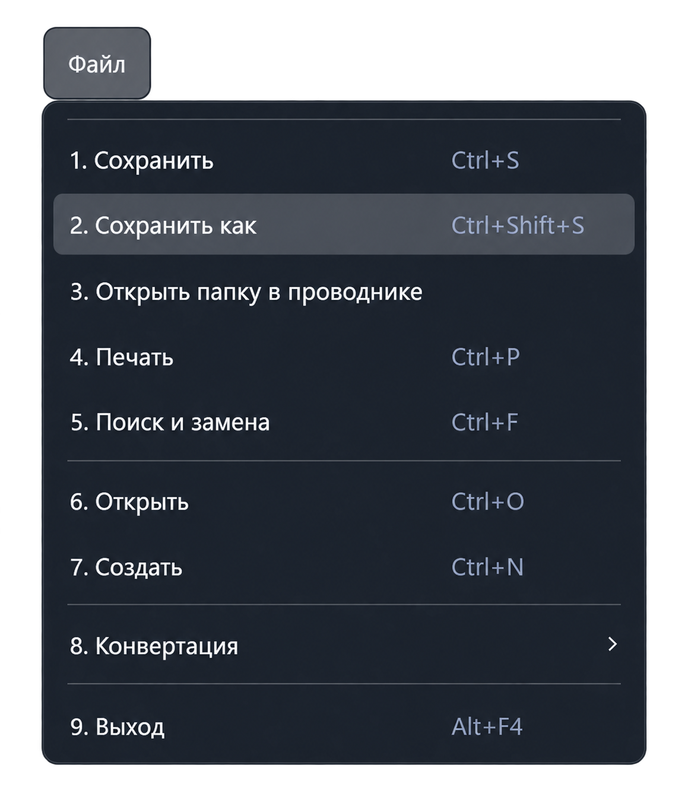

Функция "Сохранить как"
Данная функция создаёт новый текстовый документ, куда сохраняется содержание изменённого файла.
ВНИМАНИЕ: данная кнопка доступна только когда открыт хотя бы один текстовый редактор!
Путь и вызов
- Нахождение в программе
- Верхнее меню → "Файл" → "Сохранить как"
- Горячие клавиши
- Ctrl + Shift + S
На изображении показано нахождение данной функции в программе:

Действия после нажатия
После нажатия горячих клавиш или ЛКМ по кнопке "Сохранить как" откроется файловый менеджер ОС. Указываем в нём имя, тип файла и путь для сохранения (рисунок 2).
После нажатия кнопки "Сохранить" в правом верхнем углу появляется окно (рисунок 3), сообщающее об успешном сохранении файла.